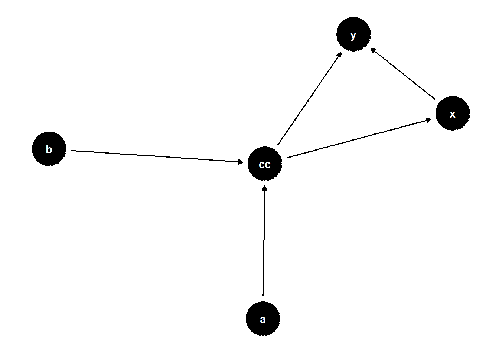

Code
library(tidyverse)
library(ggdag)
theme_set(theme_dag())
dag = dagify(
x ~ c,
y ~ x + c,
c ~ a + b,
exposure = "x",
outcome = "y"
)
dag %>%
ggdag(layout = "nicely")
To Adjust or Not Adjust?
Ryan Batten
October 26, 2023
In causal inference, we know that not adjusting for a confounder can lead to a biased estimate. However, we also know that by adjusting for a collider this can equally introduce bias (or a descendant of a collider).
This is all great in theory, but what about if we have a variable that is both? Do we adjust or not adjust? How do we answer this question?
One way to answer this question is through simulation….which is exactly what we’ll do! For this post, we’ll just focus on one scenario but in reality we could test a bunch of different scenarios. With that in mind we need to setup some parameters. These include what we are going to call the variables, the DAG and how we’re going to measure what happens for the two scenarios of adjusting versus’ not adjusting for the variable “c”.
For this idea we’ll use empirical bias as calculated from Morris, White, and Crowther (2019)
Alright, let’s get into coding!
This is just meant to be a starting point. There are a ton of variable components to this, including how strong of a variable the collider (or descendant of a collider) and confounder are, what about if they’re continuous vs binary and more! If you expand on this or have any other ideas, I’d love to hear about it (through email or LinkedIn)